選手
アーセナルの注目
-
ブカヨ サカ
-
マルティン ウーデゴール
ガブリエウ マルティネッリ
| First | Second | third |
|---|---|---|
| 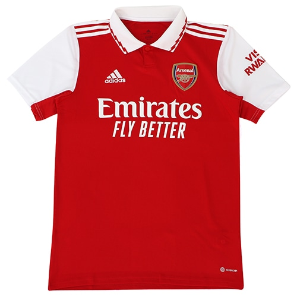 | 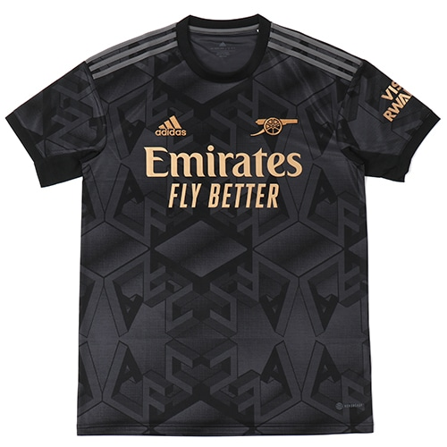 | 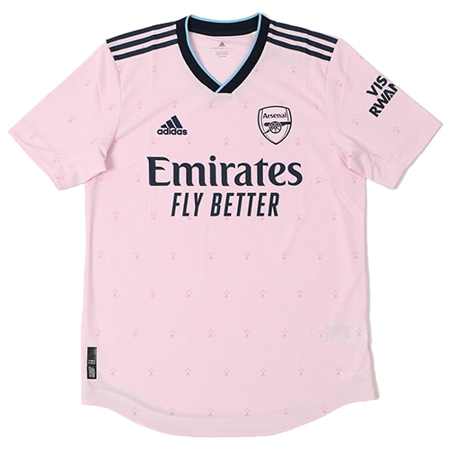 |
マンチェスターシティ
シティーの注目選手
ハーランド
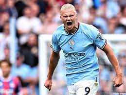デ・ブライネ
イルカイギュンドアン
| First | Second | third |
|---|---|---|
| 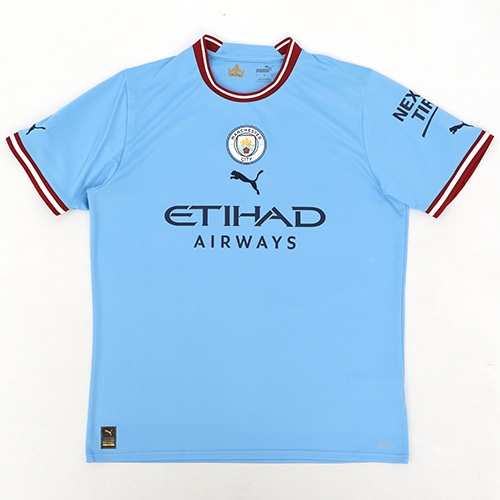 | 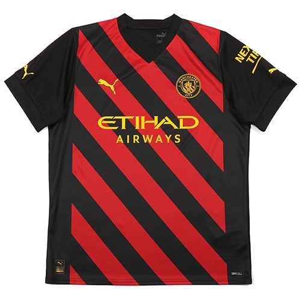 | 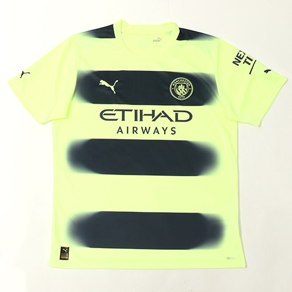 |
マンチェスターユナイテッド
ユナイテッドの注目選手
マーカス ラッシュフォード
ブルーノ フェルナンデス
ハリー ハリーマグワイア
| First | Second | third |
|---|---|---|
| 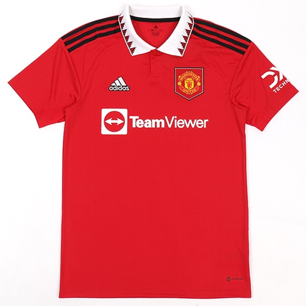 | 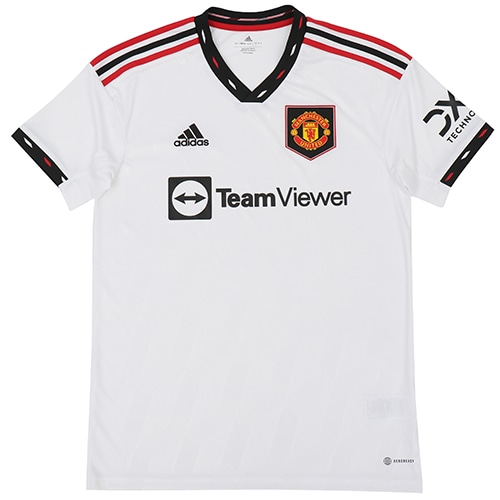 | 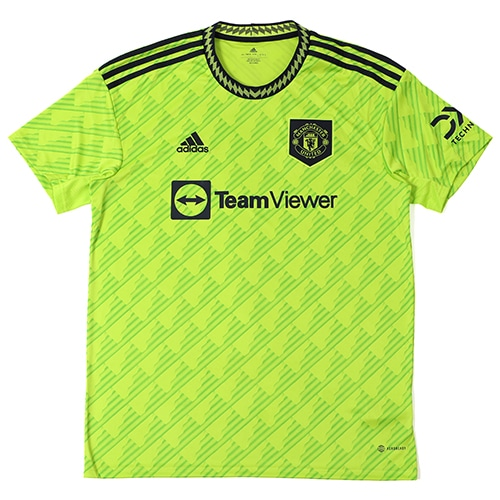 |
チェルシー
チェルシーの注目選手
エンゴロ カンテ
リース ジェームズ
エンソ フェルナンデス
| First | Second | third |
|---|---|---|
| 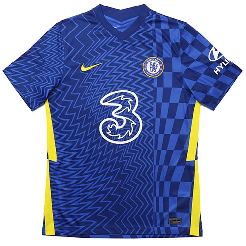 | 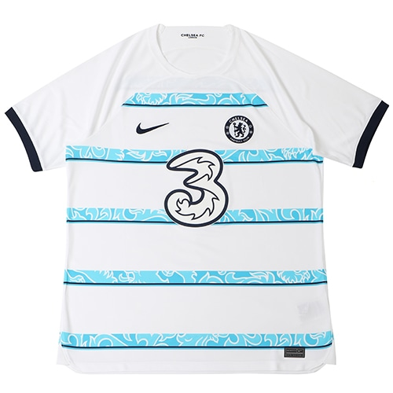 | 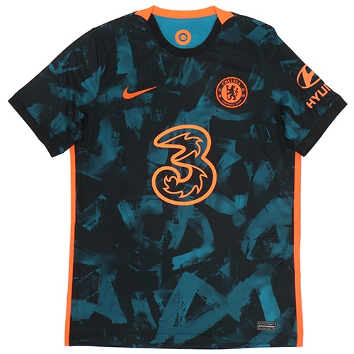 |
トッテナム
トッテナムの注目選手
ハリー ケイン
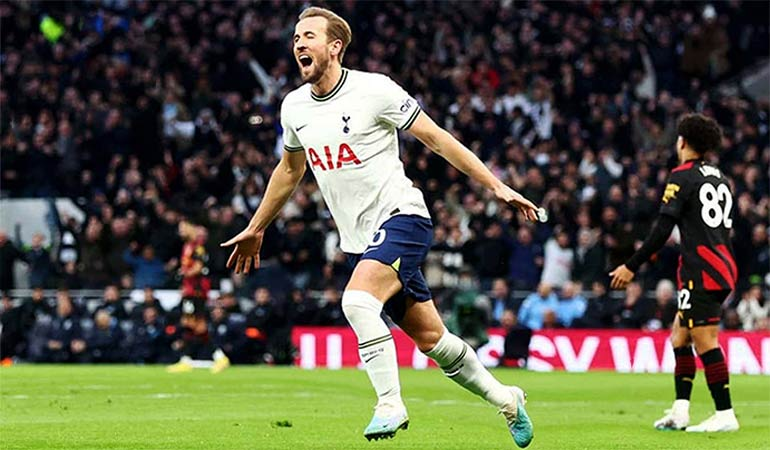ソン フンミン
デヤン クルセフスキ
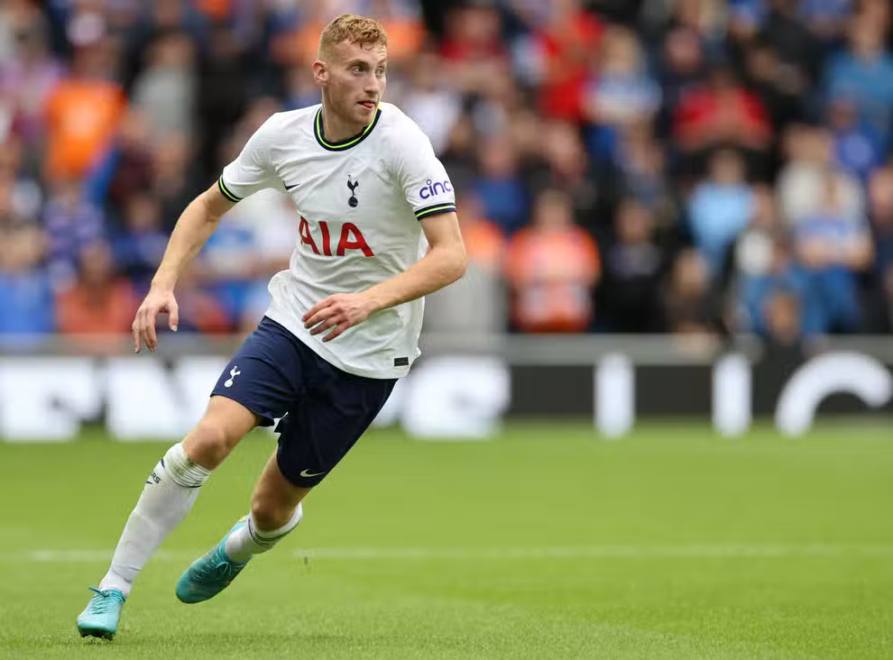
| First | Second | third |
|---|---|---|
| 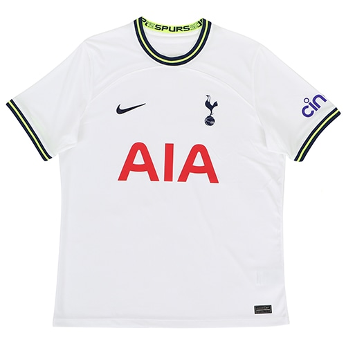 | 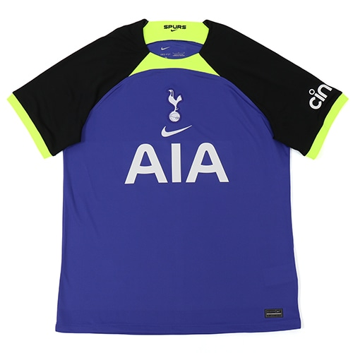 | 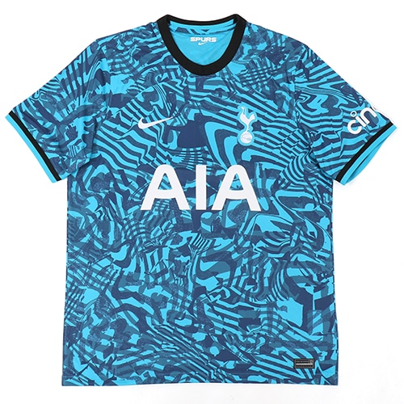 |
リバプール
リバプールの注目選手
モハメド サラー

ファン ダイク
アーノルド
| First | Second | third |
|---|---|---|
| 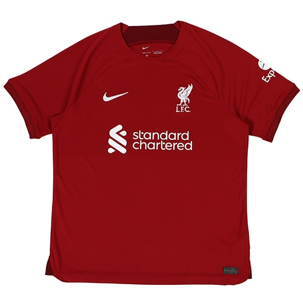 | 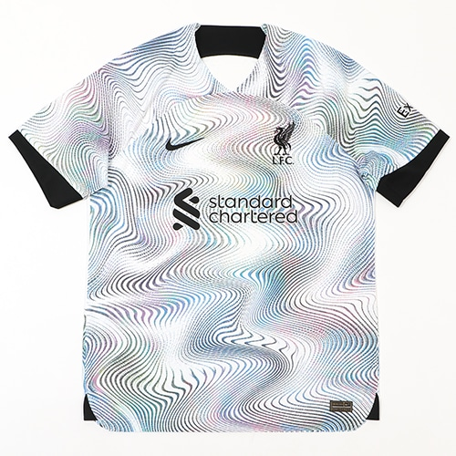 | 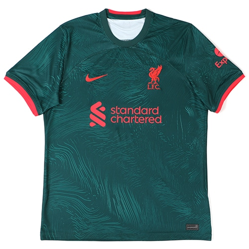 |